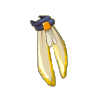
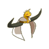
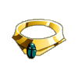
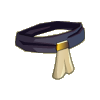
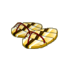
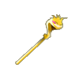

Menu barbok'you

| Niveau 156 | Cape du Minotot | ||
|---|---|---|---|
|  | Recettes : | Caractéristiques : | Conditions : |
| 100 Poils de gamino 15 Poils de déminoboule 15 Laines du minotoror 15 Poils de mominotor 10 Poils du wa wabbit 1 Cape du minotoror 1 Poil de maître pandore 1 Laine du minotot |
+201 à 250 vitalité +31 à 50 intelligence +31 à 50 chance +16 à 25 sagesse +3 à 4 CC +16 à 30 prospection +6 à 10 dommages |
||
| Remarques : | |||
| Niveau 157 | Coiffe du Minotot | ||
|---|---|---|---|
|  | Recettes : | Caractéristiques : | Conditions : |
| 21 Poils de péki 15 Plumes de tofu royal 5 Poils de skeunk 3 Etoffes du wa wabbit 3 Etoffes de fantôme pandore 1 Corne du minotot 1 minotokorno 1 Laine du minotot |
+31 à 50 chance +16 à 25% dommages +31 à 50 intelligence +201 à 270 vitalité +5 à 8 soins +3 à 5 CC +21 à 35 en sagesse +101 à 200 initiative +16 à 25 prospection 4 à 6 % résistance feu |
||
| Remarques : | |||
| Niveau 151 | Anneau du Minotot | ||
|---|---|---|---|
| Recettes : | Caractéristiques : | Conditions : | |
| 60 carapace de scaratoss 30 carapace de scarafeuille noir 16 Pyrute 3 Carapace du scarabosse dorée 1 Fémur du minotot 1 Méga pierre du craqueleur légendaire 1 Fémur du minotoror 1 Anneau du minotoror |
+101 à 130 vitalité +26 à 40 chance +16 à 30 sagesse +6 à 10% dommage +4 à 6 dommages +11 à 20 prospection +4 à 6 soins +101 à 200 initiative 4 à 6% résistance eau +4 à 7 résistance feu +4 à 7 résistance terre |
||
| Remarques : | |||
| Niveau 158 | Collier du Minotot | ||
|---|---|---|---|
| Recettes : | Caractéristiques : | Conditions : | |
|  | 30 Ailes de scarafeuille noir 30 Ailes de scarabosse dorée 25 Saphir 25 Rubis 15 Rutile 1 Collier du minotoror 1 Pierre du koulosse 1 Corne du minotot |
+1 PA +181 à 230 vitalité +26 à 40 intelligence +26 à 40 chance +26 à 40 sagesse +11 à 15% dommages +1 portée +6 à 10 dommages +3 à 4 CC +16 à 25 prospection |
|
| Remarques : | |||
| Niveau 149 | Ceinture du Minotot | ||
|---|---|---|---|
| Recettes : | Caractéristiques : | Conditions : | |
|  | 25 Poil de renarbo 12 Peau de chevaucheur koalak 8 Laine du minotoror 3 Cuir de minotoror 1 Ceinture du minotoror 1 Laine du minotot 1 Cuir du minotot 1 Etoffe de maître pandore |
+181 à 250 vitalité +31 à 50 intelligence +31 à 50 chance +21 à 40 sagesse +11 à 15% dommages +5 à 8 soins +16 à 25 prospection +500 pods +4 à 6 résistance neutre +4 à 6 résistance air +4 à 6 résistance terre +1 créature invocable |
aucune |
| Remarques : | |||
| Niveau 163 | Sandales du Minotot | ||
|---|---|---|---|
| Recettes : | Caractéristiques : | Conditions : | |
|  | 30 Peau de drakoalak 25 Peau de maître koalak 10 Peau de bworkette 1 Bottes du minotoror 1 Bottes animales 1 Cuir du minotot 1 Sabot du minotot 1 Bottes animales sombres |
+1 PM +151 à 200 vitalité +31 à 50 intelligence +16 à 30 agilité +1 portée +6 à 10 dommages +4 à 6 soins +11 à 20 sagesse +11 à 20 prospection 4 à 6% faiblesse air |
|
| Remarques : | |||
| Niveau 151 | Spectre du Minotot | |||
|---|---|---|---|---|
|  | Recettes : | Effets : | Caractéristiques : | Conditions : |
| 60 Carapace de scaratos 30 Saphirs 15 Tibia de toalak fossoyeur 10 Ambre de bambouto sacré 10 Os de fantome maho firefoux 1 Corne de minotot 1 Dent de shin larve 1 Hache du minotoror |
Dom : 13 à 27 (neutre) Vole : 3 à 5 (eau) Vole : 3 à 5 (feu) +110 vitalité +40 chance +40 intelligence +20 sagesse +25 prospection +4 soins |
PA : 4 Portée : 1 à 1 Bonus CC : +5 Critique : 1/40 Echec : 1/50 |
aucune | |
| Remarques : | ||||
| 1 Items | Aucun bonus |
|---|---|
| 2 Items | +10 Chance / +10 Intelligence / +1 Soins |
| 3 Items | +20 Chance / +20 Intelligence / +2 Soins |
| 4 Items | +30 Chance / +30 Intelligence / +3 Soins |
| 5 Items | +40 Chance / +40 Intelligence / +4 Soins / +10 Sagesse |
| 6 Items | +50 Chance / +50 Intelligence / +5 Soins / +20 Sagesse |
| 7 Items | +60 Chance / +60 Intelligence / +6 Soins / +30 Sagesse / 1 Portée |
Dofus est un MMORPG édité par Ankama." Barbok " est un site non-officiel sans aucun lien avec Ankama.
Toutes les illustrations sont la propriété d'Ankama Studio et de Dofus. Le contenu de ce site a été rédigé initialement par Immortal, il ne s'agit que d'une remise en ligne effectuée par Eternal Games.